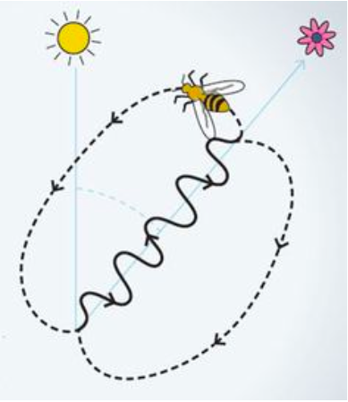
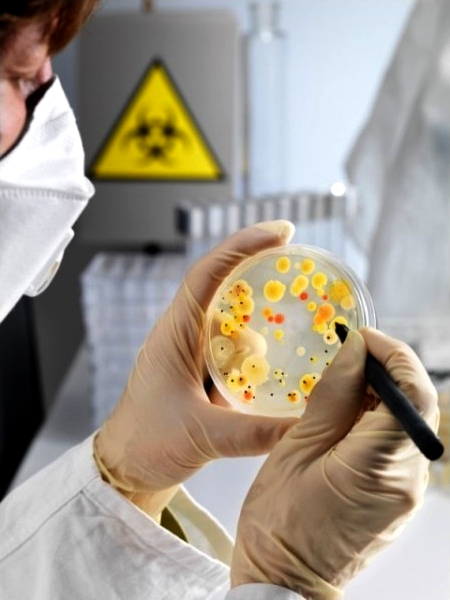
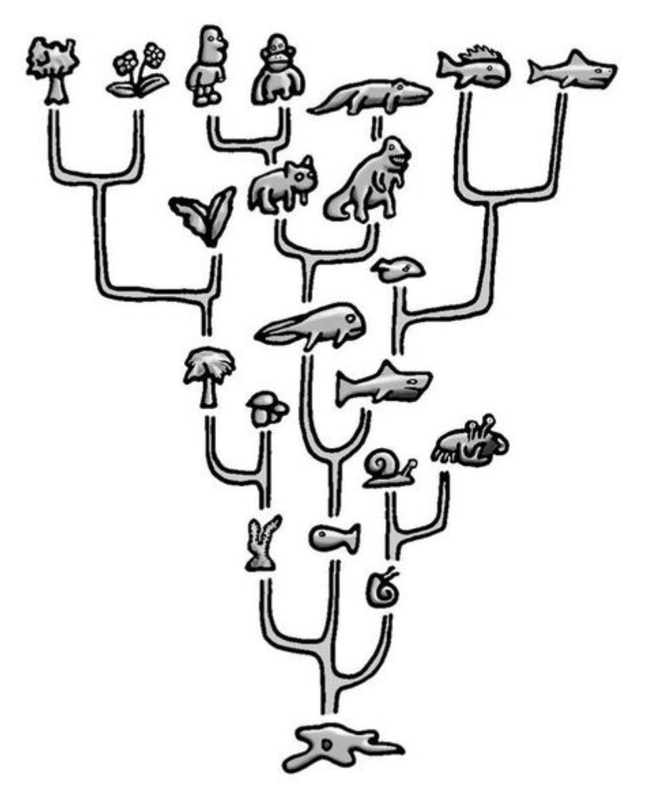
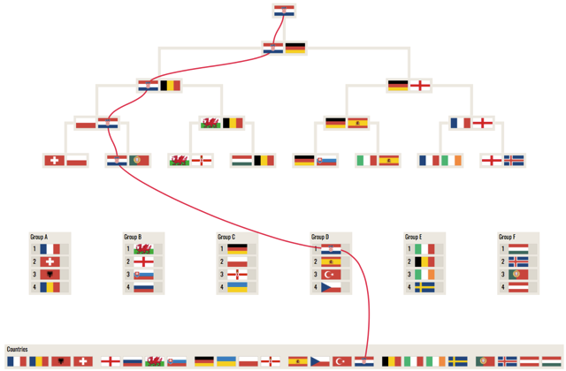
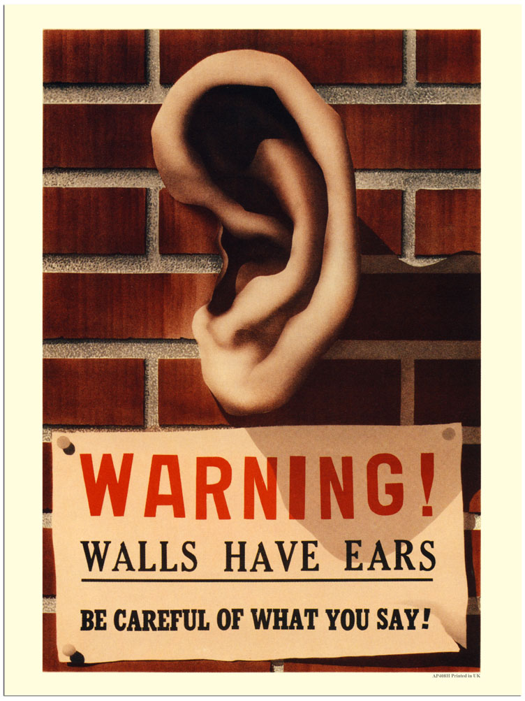

Projects
BE(E) INSPECTOR
Imagine you are in your favourite restaurant and the waiter asks you what you want to eat today! You have two choices here. You can order a meal you are sure to like because you tasted it before. Or you can order a new meal, hoping that it'll be better than what you already know. Bees take this complex decision on a daily basis when they are searching for flowers. Should I go where I went last time or should I explore the environment to find a better flower? The optimal strategy for social animals is to explore the environment and to communicate the best spots with the rest of the group. Bees communicate by waggle dance to give the location of the flowers to the rest of the group. But it's still under discussion what additional cues they use to define the precise location. A pioneer scientist Karl von Frisch shown that bees use colors to remember precisely where they were foraging, while others have recently shown than they are also able to remember shapes.
The aim of this project is to determine if bees are using more colors than shapes when they are foraging in the field. You will construct the experiment, work in the field with bees, record the foraging activity of bees and analyses the data to draw conclusions. You'll learn about sensory neurosciences, ethology and programming in a funny and happy atmosphere.

Alexandre Kempf
CNRS Paris, France
Alex is a second year PhD student at the CNRS in a neurosciences lab (UNIC). By day he's working on auditory sensory processing and machine learning, playing volleyball, playing the guitar, and taking pictures. By night he's coding for fun, cooking pizzas, and … sometimes … sleeping.
ABACUS OF BACTERIA - HOW CAN WE DETERMINE ANTIBACTERIAL EFFECT
Bacteria can grow all around: they are not just present in soil, in deep ocean water or hot springs, but also in the human body creating the human flora. There are approximately 5×10^30 bacteria on the Earth, and according to current studies a human has slightly more bacterial than human cells. Have the thought ever come into your mind to describe yourself as a bunch of bacteria? However, several species are pathogenic, and rather foes than friends to us: they can cause serious infectious diseases. The challenge remains to distinguish beneficial from harmful bacterial strains, as well as to fight pathogenic species. The critical issue of medicine and science was always to determine quickly and precisely the antibacterial effect of antimicrobials. This can be a cornerstone both for the treatment and the research.
Within the frame of this project, we will examine different bacterial strains. First, we will use basic microbiology techniques like Gram staining, growing tests and some biochemical reactions to identify our species. After that, we will inspect bacterial resistance to common antibiotics by conventional methods. Then we will try a more sophisticated manner to determine antibacterial effect by following the kinetics of their growth. At the end, we will discuss strategies for fighting against infections caused by bacteria.
Viktória Szeifert
Semmelweis University, Hungary
Viktoria is a pharmacy student at the Semmelweis University, and in the same time she works as a research student in the Institute of Physiology. Her research field is connected to immunology and microbiology, focusing on the antibacterial effect of extracellular vesicles derived from neutrophil granulocytes. In 2010, Viktoria was also a participant of Summer School of Science as a high school student, and as a milestone of her life, she has felt in love with the microbiology there. Her aim is to bring back this enthusiasm to today's participants.
BUILD A TREE TO UNDERSTAND EVOLUTION
Have you ever wondered how scientists know the way organisms are related to each other and what kind of historical relationship they share? There exists a whole field of study within biology called molecular phylogenetics which tries to answer these kind of questions. Phylogenetics is important because it enriches our understanding of how genes, genomes and species evolve. Through phylogenetics, we learn not only how the species and sequences came to be the way they are today, but also general principles that enable us to predict how they will change in the future. Moreover, phylogenetics helps us answer the fundamental biological questions, and is also extremely useful for numerous applications such as bioinformatics, forensics and biological classification.
In this project, we will learn how to isolate DNA and specific genes used in phylogeny of organisms, using methods commonly associated with molecular biology research. The sequences we get from these isolated genes will be further used for building an evolutionary tree. We will learn what exactly an evolutionary tree is and how to create it using common bioinformatics tools. Furthermore, we will use mathematical models associated with phylogeny to calculate the distance between species. At the end of the project, you will understand basics of evolution and what it takes to be a molecular biologist.
Domagoj Gajski
University of Zagreb, Croatia
Domagoj is a fourth-year molecular biology student at the Faculty of Science in Zagreb. During his studies he became fond of spiders, their ecology and kinship and started to go on field trips and do research on them. Now he is working on revelation of new cave spider species on Ruđer Bošković Institute. He participated in S3 as a high school student and later as a swapshop and project leader. In his free time, he plays tamburitza bass for a folk dance group and travels the world with them. He also educates children through workshops, dances and likes to sing and play music with friends.
WHO'S WINNING IT? FORECASTING SPORTS TOURNAMENTS
Did you know that the average pass by Luka Modrić travels 17 m? Or that in January 2017 Lebron James made 1 out of 2 driving floating jump shots (whatever that is)? Just like almost any area of life, professional sports generate extraordinary amounts of very detailed data, which resulted in the so-called "analytics revolution"; for an entertaining example see the movie "Moneyball" starring Brad Pitt. High-speed cameras record every movement on the field, annotators turn the videos into thorough match reports, and everything is categorized and stored in fast databases. Nevertheless, putting these oceans data to good use (rather than drowning in them) is also becoming extremely challenging. Artificial intelligence (AI), a research field within computer science, provides us with tools to do just that. In particular, forecasting the future using the data about the past is an important task that is very interesting to sports insiders and fans alike.
In this project we will build a system that forecasts the course of a sports tournament based on data. This system should be able to answer questions like "Who is the most likely winner?" or "What is the chance that this team will reach the semifinals?". In order to accomplish this, we first need to identify the data that can be useful to this task. Then we will use methods from AI to construct a model that forecasts the outcomes of individual matches, which in turn, is a building block for a bigger model that forecasts the possible ways the whole tournament can play out. We can compare the results to our intuition or the experts' opinions.
Vladimir Dzyuba
KU Leuven, Belgium
Vladimir Dzyuba is a PhD student at KU Leuven in Belgium. His research is about interactive data analysis, or how artificial intelligence can help natural intelligence cope with huge amounts of data. He got interested in this topic after witnessing these issues firsthand as a database developer in Russia. In his spare time he enjoys playing and watching football, going to the cinema, and participating in quizzes.
HOW CAN YOU FIND A PLANET OUTSIDE OF SOLAR SYSTEM?
Until only twenty years ago, we weren't sure if our planet was the only one in the universe, but since then, astronomers have been able to detect thousands of extrasolar planets. Most of these planets are discovered using a technique called transit photometry. This is done by observing how a star changes its brightness, and it is from these changes that we are able to see if there is a planet orbiting the star or not. But, there is a catch! Latest sky surveys and missions like Kepler, which are designed to search for these worlds produce more data than we are able to process. Luckily, telescope technology wasn't the only one to advance rapidly in the last decade. Breakthroughs in computer science have made computers powerful enough to process data for us, by using machine learning algorithms. This technology isn't only useful when helping you to find whatever you are searching for online, but have made scientists' lives a whole lot easier.
In this project, we will find out exactly how transit photometry works, and then we will make a neural network, a type of artificial intelligence to learn on its own how to see if a star has a planet or not, and maybe even calculate if a planet might be habitable or not. You will also find out how different types of neural networks work, and how to use them in different circumstances.
Boris Majić
School of Electrical Engineering, University of Belgrade / Junior assistant at Petnica Science Center
Boris is a fourth year student at School of Electrical Engineering in Belgrade, where he focuses on signal processing and pattern recognition. He spends too much of his time in Petnica Science Center (Serbia), where he, as a junior assistant, mentors several astronomy and astrophysics projects. Boris was also a participant at S3++ in 2013. Rest of his time, Boris prefers to spend travelling, hanging out with his friends, or watching movies and playing video games.
EAR IN THE WALL
Besides being the title of a rock song and a potential scene from a horror movie, ear in the wall might suggest that some unseen parties are listening in - be it on our slice of daily gossip or discussion on groundbreaking ideas. Today that might be seriously considered only as part of some story, but merely 50 years ago such activities were very real and widespread. Perhaps not in everyday households, but government buildings and state departments were quite often "bugged" (and the ears were listening).
In this project we shall follow the footsteps of Russian scientist Leon Theremin (Lev Termen) and build our very own Thing - a listening device that successfully spied the US Embassy in Moscow for 7 years. Its genius was in simple design that was far ahead of its time – it carried no wires, electrical circuits, or batteries to wear out. And maybe after we successfully build the device, you will not need to look for your sibling's diary anymore, because you will hear all those juicy stories with your own “ears".
Anna-Maria Križanac
Univeristy of Zagreb, Croatia
Anna-Maria is a student at the Geophysics Department at the Faculty of Science in Zagreb. She developed an attachment towards science at age of four, when she plugged screwdriver into a socket. Even today she is fascinated by electricity. Along that part of physics, she has interest in meteorology and seismology. In her free time, she likes to do some researches in her fields of interests and to take some additional online courses. Through time, next to science, she developed a love towards reading, listening to music, writing and baking.
Ana Petrinec
University of Zagreb, Croatia
Ana is a fourth-year student of Physics at Faculty of Science in Zagreb. She has previously participated in S3 2011 and S3++ 2012. She is interested in detectors and their application in high energy physics and space technology. Since she also loves to tinker with electronics, she is now working on improving the effectiveness on one of the experimental beam lines on tandem accelerator at Ruđer Bošković Institute. In her free time, she enjoy poetry, long walks and music, but can also be found photographing around, rollerblading or making stuff (as part of whatever side project sparks her interest at the time).